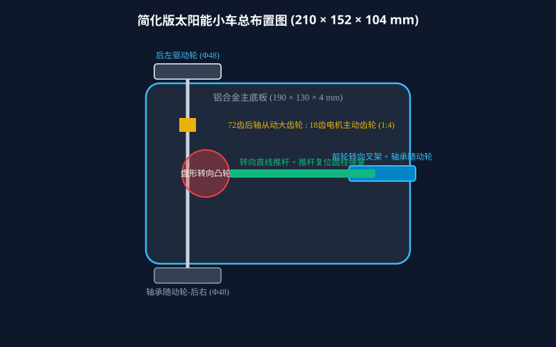
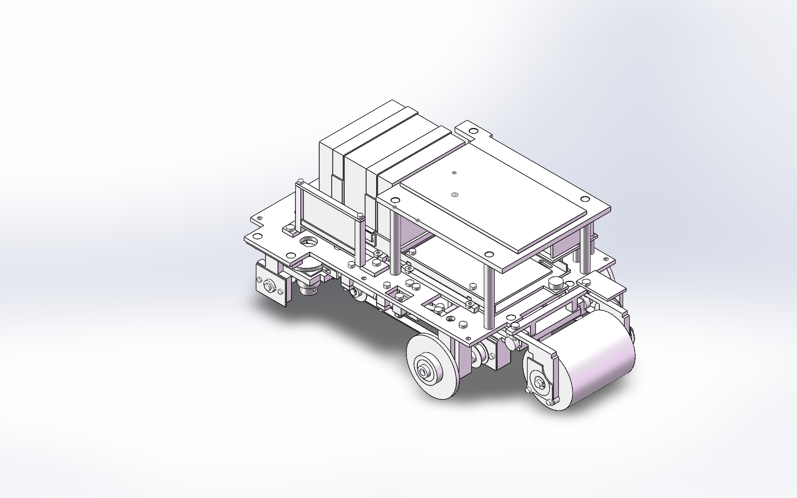

2026-11-05 · 用户授权设计修订 · 旧交付包保持冻结

原E05是电源PCB，原E07是语音充电PCB，原设计采用两个机械占位板。R5将两者功能收拢为一块E05综合电源控制PCB，取消E07、上压条和托盘立架。合并的是板卡数量，充电保护、稳压、电机驱动和语音接口仍需实现。50×30是暂定机械包络，尚未完成原理图、PCB布局、散热和电流验证；不能按本占位板直接生产电路。
供电链：单块光伏 → 综合电源板的充电/保护 → 超级电容 → 分路稳压供主控、电机与语音。电机驱动、回流和主控去耦应分区。原P124图纸标称1.35W；取消P123后原双板2.06W结论失效，不能承诺树莓派与电机持续同时满载。
一台N20电机 → 18/72齿轮减速 → 后中心轮滚动前进；后轮轴 → 1:30蜗杆副 → C01凸轮 → 滚子从动件与拉杆 → 前双轮机械转向。三只轮子保持圆轮。薄轮缘与凸轮是两项独立结构选择。
轮径48、蜗杆减速30，忽略打滑时凸轮每周对应前进30π×48≈4524 mm。现C01为示教S曲线，C02为直行替换盘。没有指定赛道坐标时，不能把示教轮廓说成比赛路线凸轮。正式赛道需按路线曲率、轴距、转向传动关系逆算轮廓，并校核压力角、曲率和滚子接触。
高校公开案例也采用凸轮控制转向并通过实际赛道反复调试：沈阳工业大学项目说明、山东大学项目调试记录。本版沿用现有转向链和轮径，薄轮面并不自动保证低滚阻或不打滑。
R5名义间隙扫描记录：仅以本版记录为准，旧版几何检查不自动作为新版通过证据。检查包括三配置、凸轮360姿态及两托盘行程。柔性线束弯曲、样机温升、刚度、重心、滚阻与抓地仍需要实物验证。
原生SolidWorks：8个新增或修改零件通过草图和保存重开复核；新版清扫整车339实例、356条原生配合已保存重开，未发现丢失配合引用或超阈值位置偏差。保留Cam_Roller_Contact、Drive_18_72、Worm_1_30。轮子替换后两处轴承同心配合已按新圆柱面重建。记录位于solidworks/检查记录/R5。网页扫描不是原生全行程动力学分析，已有R4.1零件简化/欠定义项继续见旧账本。原生复核摘要。
